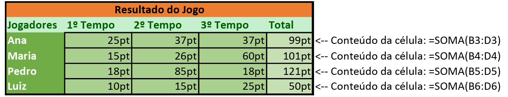

Voltemos à escola! Pelo menos teoricamente.
O Excel nos permite fazer operações matemáticas de maneira muito mais fácil que a que aprendemos com lápis e papel, e até mesmo mais fácil que com uma calculadora de mão ou de celular.
Como já vimos anteriormente, tudo o que inserimos numa célula é tratado como conteúdo, que pode ser geral, número, moeda, porcentagem e assim por diante, mas podemos inserir operações matemáticas e fórmulas utilizando o sinal de igual, assim:
=5+5
Ao pressionar Enter o Excel exibirá na célula apenas o resultado, mas o conteúdo do cálculo ainda pode ser verificado na Barra de Fórmulas. Podemos ainda efetuar cálculos com valores de outras células fazendo referência ao nome dessas células na fórmula, assim:
=3+B4
O cálculo acima somará 3 ao valor contido na célula B4 e retornará este resultado na célula onde o cálculo foi feito.
É possível alterar o cálculo na Barra de Fórmulas ou diretamente na célula com um duplo-clique.
Podemos ainda referenciar várias células numa fórmula utilizando separadores de ponto e vírgula ou de dois pontos. O ponto e vírgula referencia células independentes e os dois pontos referenciam sequências de células, assim:
=SOMA(A1:A5)
O cálculo acima somará todos os valores desde a célula A1 até a célula A5.
=SOMA(A1;A2;A5)
O cálculo acima somará os valores das células A1, A2 e A5.
No exemplo abaixo, a fórmula de soma foi utilizada para somar uma sequência de células utilizando dois pontos:
No Excel números sobrescritos não são calculados como potenciação, podemos calcular potências utilizando o acento circunflexo, assim:
=5^2
O resultado do cálculo acima é o quadrado de 5, ou seja 25 (5x5=25).
=5^5
O resultado do cálculo acima é 5 elevado à potência de 5, ou seja 3.125 (5x5x5x5x5=3125).
Assim como em cálculos matemáticos comuns, para obter uma raiz quadrada elevamos um número à potência de 1/2, e uma raiz cúbica elevando à potência de 1/3, podemos fazer estes cálculos numa planilha assim:
=81^(1/2)
O resultado do cálculo acima é a raiz quadrada de 81, ou seja 9 (9x9=81).
=27^(1/3)
O resultado do cálculo acima é a raiz cúbica de 27, ou seja 3 (3x3x3=27).
Estes são cálculos manuais, mas podemos utilizar fórmulas para calcular potências e raízes.
É possível ainda referenciar células ao invés de utilizar valores.
Para dar prioridade máxima a certa equação, basta a colocarmos entre parênteses, de forma que tudo que estiver entre parênteses será executado antes que qualquer outra operação, assim:
=(A1+A2+A3)*(B1+B2+B3)
Neste exemplo, as somas das células serão calculadas antes que a multiplicação, caso não utilizássemos os parênteses o primeiro cálculo a ser feito seria A3*A4, e o resultado seria somado aos outros valores.
Como aprendemos na escola, os cálculos devem respeitar a precedência de operadores, de forma que os cálculos entre parênteses devem ser feitos primeiro, depois as potências e raízes, em seguida multiplicação e divisão e por fim soma e subtração. Para facilitar, observe a lista abaixo:
1º. Parêntesis.
2º. Potência e raiz (o que vier primeiro).
3º. Multiplicação e divisão (o que vier primeiro).
4º. Soma e subtração (o que vier primeiro).
Observe a operação abaixo e tente calcular o resultado de cabeça, para verificar se você consegue observar a precedência dos operadores:
=(5+(4*3)*(3+2)/2)
Vejamos em que ordem o cálculo será feito.
1. ((4*3 = 12) e (3+2 = 5)) ===> Primeiro os parêntesis.
2. (12*5 = 60) ============> Depois a multiplicação.
3. (60/2 = 30) ============> Depois a divisão.
4. (5+30 = 35) ============> Por fim a soma.
Efetue este cálculo numa célula do Excel e veja se obtém o mesmo resultado.
Podemos não apenas referenciar células da mesma planilha, mas referenciar células de outras planilhas dentro da mesma pasta de trabalho (arquivo do Excel). Para referenciarmos células em outras planilhas basta inserirmos: “o nome da planilha”, “uma exclamação” e “o nome da célula na planilha de destino”, assim:
=(Planilha2!B4+Planilha1!C3)
A fórmula acima soma o valor da célula B4 da Planilha2 ao valor da célula C3 da Planilha1, e retorna esse valor na célula da planilha atual em que a fórmula foi feita.
Nessa fórmula, Planilha2 e Planilha1 são os nomes dados às planilhas, as planilhas terão o nome que o usuário definir ao criá-las ou ao renomeá-las, por exemplo Saldo, ou Contas, ou Mês etc.
Um detalhe importante é que você não precisa digitar todos os nomes de células e planilhas para referenciá-las, enquanto digita a fórmula, basta clicar na célula de destino para inserir seu nome na fórmula.
Já passamos brevemente pelas fórmulas SOMA e MÉDIA, mas o Excel possui uma gama variada de fórmulas para diversas finalidades, que podem manipular cálculos numéricos e financeiros, datas, textos e condições lógicas. Vejamos a principais.
As fórmulas SOMA() e MULT() servem respectivamente para somar e multiplicar valores e são escritas nesta regra:
=SOMA(num1;num2;num3...)
=MULT(num1;num2;num3...)
Onde num1, num2 e num3... são os valores numéricos (ou células referenciadas) a serem somados. Podemos passar como argumentos vários valores ou células e até intervalos, dessa maneira:
=MULT(A1:A6)
O cálculo acima multiplicará todos os valores no intervalo de valores de A1 até A6.
=SOMA(A1:A6)
O cálculo acima somará todos os valores no intervalo de valores de A1 até A6.
=MED(num1;num2...)
A regra acima demonstra a fórmula de média, que recebe vários argumentos, soma-os e em seguida os divide pela quantidade de argumentos recebidos, obtendo a média total. Exemplo:
=MED(5;6;7;8;9)
O cálculo acima retorna 7, ou seja: (5+6+7+8+9 = 35)/5 = 7.
Utilizando uma fórmula de mínimo e máximo podemos obter o maior e o menor valor de um intervalo de valores específicos. Pode não fazer sentido usá-las se o intervalo for preenchido manualmente, mas quando temos um conjunto de dados em que os valores são gerados por fórmulas e podem ser alterados automaticamente, é útil fazer uso das fórmulas de mínimo e máximo. Elas seguem essa regra:
=MÍNIMO(num1;num2...)
=MÁXIMO(num1;num2...)
Os argumentos são o conjunto de células ou de valores. Segue exemplos:
=MÍNIMO(A5;A6;A7;A8;A9;A10)
= MÁXIMO (A5:A10)
As fórmulas retornam o maior ou o menor valor contidos nas células A5 a A10, e podem ser escritas de qualquer uma das duas maneiras exibidas.
É possível calcular potência e raiz também por meio de fórmulas, como foi dito anteriormente, as fórmulas seguem a regra a seguir:
=POTÊNCIA(num;potência)
=RAIZ(num)
A fórmula de potência recebe como primeiro argumento um número ou referência de célula e como segundo a potência, que pode ser também uma referência. Assim:
=POTÊNCIA(A1;3)
A fórmula acima eleva o valor na célula A1 ao cubo (à potência de 3).
A fórmula de raiz recebe apenas um argumento, o valor ou referência de valor do qual será extraída a raiz quadrada. Assim:
=RAIZ(9)
A fórmula acima retornará 3, que é a raiz quadrada de 9. O Excel não possui função para extrair raiz cúbica, o que pode ser feito manualmente como mostrado no subtítulo sobre Potência.
Como aprendemos na escola o módulo é o resto da divisão inteira, por exemplo para dividirmos 9 por 4 e obter um valor inteiro, obteremos 2 e restará 1 (9 / 4 = (2 * 4) + 1). A fórmula do módulo funciona assim:
=MOD(num;divisor)
Veja o exemplo a seguir:
=MOD(27;5)
A fórmula acima retornará 2 que é o resto da divisão inteira de 27 por 5, ou seja, (27 / 5 = (5 * 5) + 2).
Um recurso interessante que veremos brevemente são as fórmulas de data e hora, veja algumas:
HOJE()
Retorna a data atual com horário 0:00:00. Não recebe argumentos.
AGORA()
Retorna a data e hora atuais (inclusive com os segundos). Não recebe argumentos.
DATA(ano;mês;dia)
Insere uma data formatada recebendo como argumentos (nesta ordem): ano, mês e dia.
Você pode calcular intervalos de dias utilizando datas! Por exemplo numa primeira célula insira a fórmula HOJE() e numa segunda célula insira uma data específica. Em seguida, numa terceira célula, insira um cálculo que subtraia a segunda da primeira célula e obterá o intervalo em dias.
Fórmulas Lógicas testam condições e retornam valores. Elas são muito úteis em diversas situações, aprenderemos como utilizá-las trabalhando com a fórmula SE, que é a mais comum, mas existem várias outras.
A construção da fórmula SE funciona da seguinte maneira:
=SE(teste_lógico;condição_se_verdadeira;condição_se_falsa)
Vejamos cada um dos argumentos que ela recebe:
1. Teste Lógico: é o teste que definirá se uma condição foi satisfeita, por exemplo, se um valor é maior, menor ou igual a outro valor.
2. Condição verdadeira: Valor que será retornado pela célula caso a condição do teste lógico for satisfeita.
3. Condição falsa: Valor que será retornado caso a condição do teste lógico não for satisfeita.
Vejamos alguns exemplos:
=SE(5>4;1;2)
Apenas para fim ilustrativo, claro. A fórmula acima testa se 5 é maior que quatro e retorna 1 se for, e 2 se não for. O valor retornado na célula será 1.
=SE(5=4;“É igual”;“É diferente”)
A fórmula testa se 5 é igual a 4, se for retorna o texto “É igual”, se não, retorna “É diferente”. A célula conterá o resultado “É diferente”.
Note as aspas quando precisamos inserir texto numa fórmula.
=SE(A1>=A2;“Acima da meta”;“Abaixo da meta”)
A fórmula testa se o valor na célula A1 é maior ou igual ao valor na célula A2 e retorna “Acima da meta” se for verdadeira, ou “Abaixo da meta” se for falso.
Existem várias opções de testes lógicos que podem ser construídos. Podemos utilizar os seguintes operadores:
> Maior que.
< Menor que.
>= Maior ou igual a.
<= Menor ou igual a.
= Igual a.
Podemos ainda testar o conteúdo existente numa célula, por exemplo: SE(A1=“sim”;1;2). Se o valor em A1 for “sim”, retorna 1, senão, retorna 2.